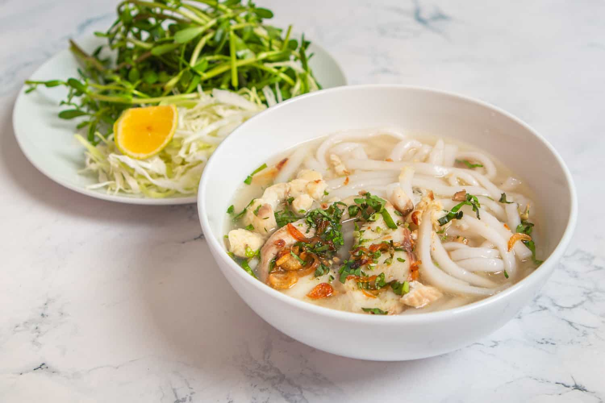
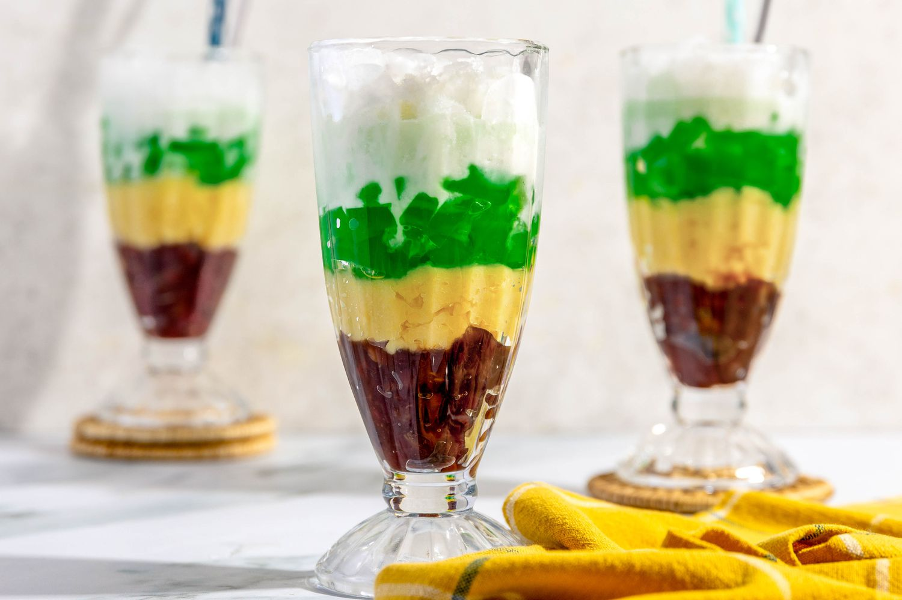
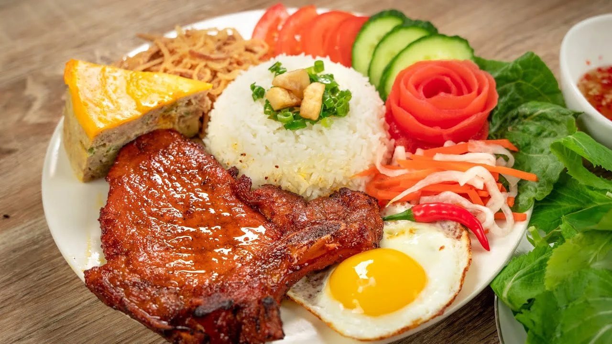
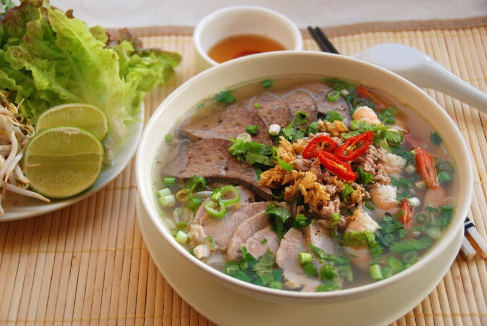
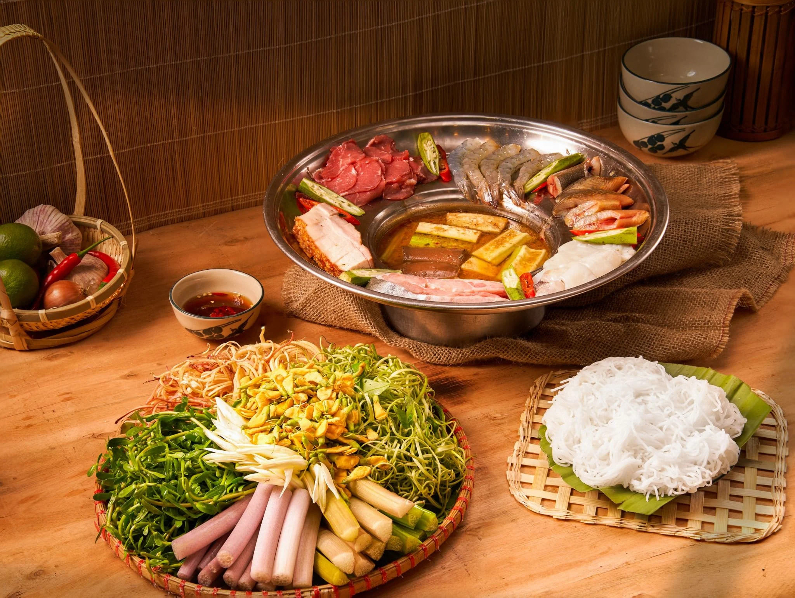

Southern Vietnamese cuisine leans sweet and light, enriched with coconut milk, fresh herbs, and tropical ingredients — a cuisine that reflects the region's abundant rivers and fertile orchards.
Popular dishes

Bánh canhThick Noodle SoupThick, chewy rice or tapioca noodles in a hearty broth with crab, pork, or fish cake.

Chè ba màuThree-Color DessertA colorful layered dessert of sweet beans, jelly, and coconut milk served over crushed ice.

Cơm tấmBroken Rice with Grilled PorkBroken rice served with grilled pork chop, a fried egg, and pickled vegetables — a beloved Saigon street food staple.

Hủ tiếuSouthern-style Noodle SoupA light, savory noodle soup with pork, shrimp, and crispy garlic, popular across southern Vietnam.

Lẩu mắmFermented Fish HotpotA bold fermented fish hotpot simmered with pork, seafood, and vegetables, bursting with rich umami flavor.